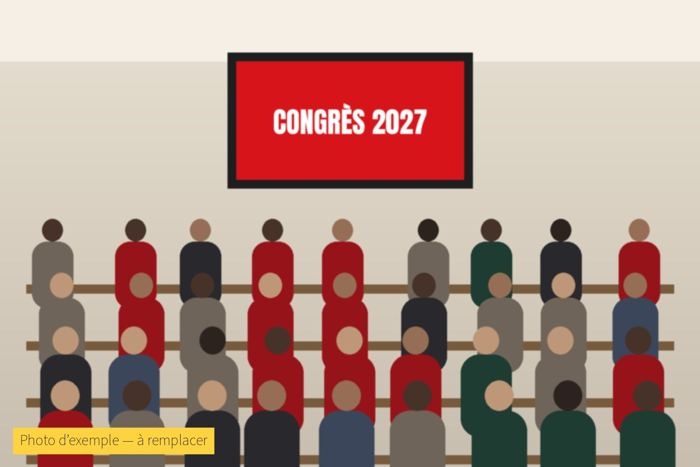

Congrès Exemple
Congrès 2027 : la préparation est lancée
Calendrier, contributions, réunions : tout ce qu'il faut savoir pour participer à l'écriture de la motion Action Syndicale.
Congrès d'orientation 2027
Un syndicat qui rassemble, des propositions pour l’enseignement supérieur et la recherche, des collègues qui décident. Signez la motion Action Syndicale, envoyez vos contributions, venez aux réunions.
137 signataires sur un objectif de 200 Chiffre de démonstration
Dans 7 mois Lieu à confirmer
Congrès Exemple
Calendrier, contributions, réunions : tout ce qu'il faut savoir pour participer à l'écriture de la motion Action Syndicale.

Budget Exemple
Gel des recrutements, formations fermées, bâtiments vétustes : les collègues paient le prix du sous-financement.

Précarité Exemple
Doctorant·es, ATER, vacataires, CDD : une part croissante des enseignements repose sur des collègues précaires.
Libertés académiques Exemple
Les libertés académiques sont une condition de la recherche et de l'enseignement. Les défendre est l'affaire de toutes et tous.
L'essentiel de notre orientation, à lire en trente secondes. Le texte complet suit plus bas. Exemple
L'unité des collègues et des organisations syndicales, pour défendre nos droits avec plus de force.
Franchises universitaires, libertés académiques et statuts de la fonction publique : des droits à défendre pied à pied.
Des emplois titulaires sur les besoins permanents et de vrais droits pour les doctorant·es, contractuel·les et vacataires.
Des rémunérations et des carrières à la hauteur de nos qualifications et de toutes nos missions.
Du temps pour enseigner et chercher, des instances démocratiques et un service public ouvert à toutes et tous.
L’édito
À sept mois du congrès d'orientation, Action Syndicale lance la préparation. Notre boussole : rassembler les collègues autour de propositions concrètes pour l'enseignement supérieur et la recherche.
Lire l’éditoMobilisation Exemple
Réunion de tendance Exemple
Webinaire Exemple
Échéance Exemple
Votre voix compte. Une idée, une analyse, une expérience de terrain ? Écrivez une contribution : elle sera relue puis publiée avec votre nom.
Écrire une contribution


Rejoignez Action Syndicale pour préparer le congrès, porter nos propositions et agir dans votre établissement.